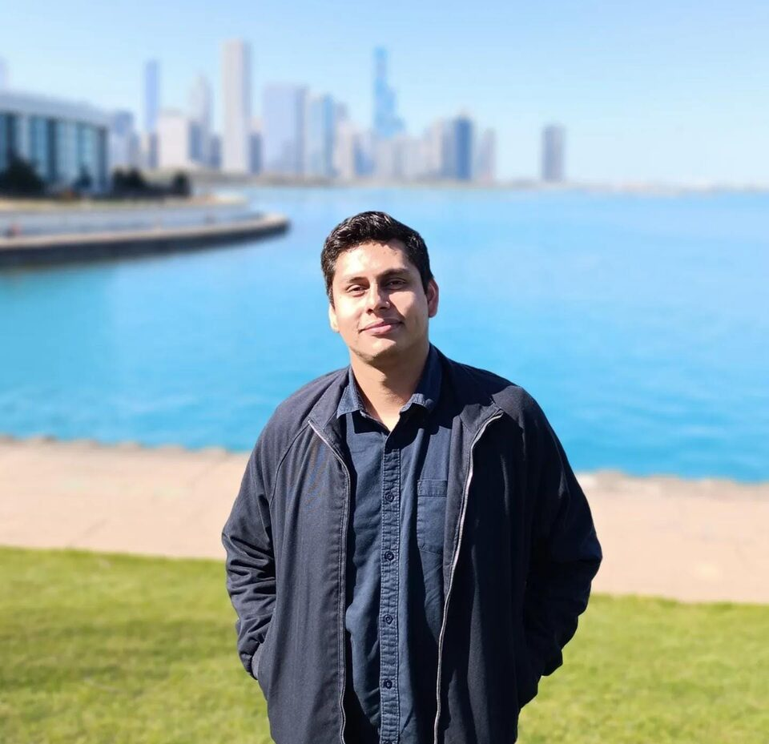
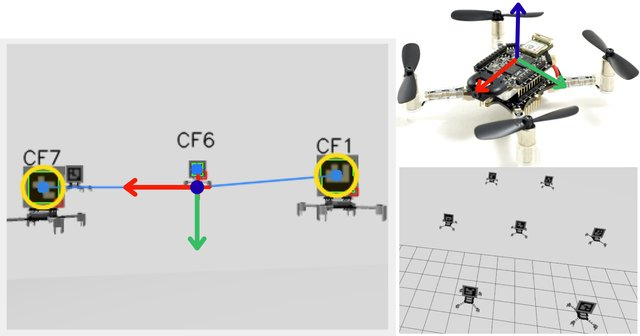
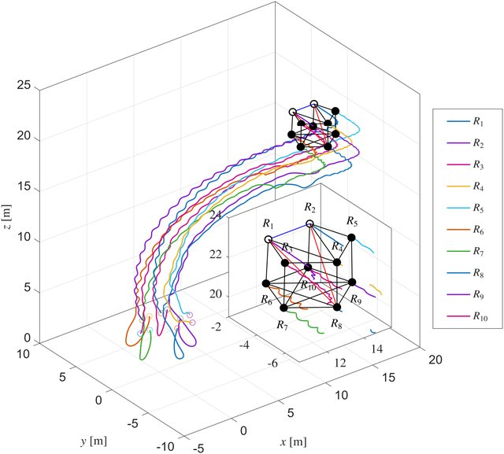
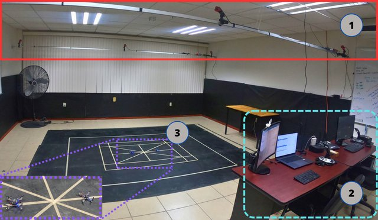
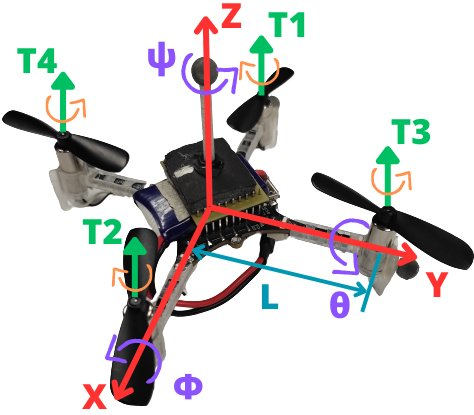
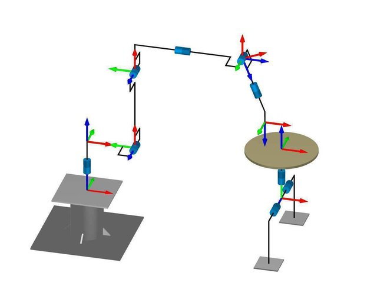

Julio Cesar Rodriguez Cervantes
PhD Student in Electrical Engineering · CINVESTAV Guadalajara
Multi-UAV systems · Bearing-only formation control · State estimation on S²
My research focuses on cooperative control of multi-UAV systems using only bearing measurements — no GPS, no distance sensors. Using robust nonlinear control techniques, I design formation controllers and state estimators that operate directly on the unit sphere S², enabling scalable drone swarms for GPS-denied environments.
Research interests: bearing-only formation control and estimation for multi-agent systems · robust nonlinear control techniques · applications to unmanned aerial systems (UAVs).
Education
- Focus: Bearing-only formation control strategies for quad-rotor systems, contributing to advancements in multi-agent coordination.
- Designed and analyzed novel distributed control algorithms to enhance the autonomy and robustness of UAV swarms.
- Developed high-fidelity simulations in MATLAB and Python to validate theoretical control models and algorithm performance.
- Engineered a custom experimental platform with ROS 2, Gazebo Ionic, and an ESP32-Drone for hardware-in-the-loop (HIL) validation of control strategies.
- Conducted real multi-quadrotor flight experiments to validate the bearing-only controllers and estimators in hardware; a journal article with these results is in preparation.
- Funded by SECIHTI (Secretaría de Ciencia, Humanidades, Tecnología e Innovación).
- Thesis: Designed formation controllers for Quad-Rotor-type multi-agent systems, achieving precise control and coordination among multiple drones.
- Developed and tuned controllers for multiple aerial mobile nano-robots, optimizing performance and behavior across a range of operating scenarios.
- Built a ROS-based platform enabling coordination and communication among multiple vehicles for research and development.
- Set up Git repositories for version control, ensuring efficient collaboration and code management throughout the project.
- Funded by CONACYT (Consejo Nacional de Ciencia y Tecnología, now SECIHTI).
- Professional internship (Dec 2020 – Jun 2021): developed the control subsystem for a two-degree-of-freedom cooperating table for an arc welding robot, optimizing motion trajectories and coordination with the robot.
- Designed, assembled, and integrated the control cabinet; programmed the cooperative table positioning control system and implemented communication protocols with a Fanuc ARC Mate 100iC welding robot.
Experience
Teach undergraduate courses at the Health Sciences Academy, across the Biomedical Engineering, Biotechnology Engineering, and Pharmaceutical Chemistry-Biotechnology (B.Sc.) programs. Course load evolves each term:
- Fall 2025: Kinetics and Dynamics; Analog and Digital Electronics; Analysis and Design of Electronic Circuits.
- Spring 2026: Kinetics and Dynamics; Analog and Digital Electronics; Analysis and Design of Electronic Circuits; Advanced Programming; Power Electronics.
- Fall 2026 (current): Precalculus; Physiological Modeling; Image Analysis and Processing; Differential and Integral Calculus; Analog and Digital Electronics; Kinetics and Dynamics; Advanced Programming.
Across three semesters, designed course materials and labs spanning circuit theory, embedded/analog systems, mechanics, and programming for engineering undergraduates.
- Installed and commissioned automation equipment and conveyor systems for PepsiCo Gatorade (Indianapolis, USA) and E80 Group (Chicago, USA) projects.
- Installed and configured LGV (Laser Guided Vehicle) robots and supervised electromechanical warehouse equipment.
- Managed inbound/outbound warehouse logistics and inventory using SAP, and trained technical staff on automated machinery.
- Collaborated with the CFE-Andritz-Hydroproject and CFE-Andritz-Seisa consortia on the repowering and modernization of the “Peñitas” and “Angostura” hydroelectric power plants.
- Oversaw contractual work schedules to ensure compliance with deadlines.
- Managed additional and extraordinary works, including reworks and incident handling.
- Oversaw inbound shipments at the warehouse and tracked material delivery at the construction site.
- Monitored personnel attendance records and man-hours worked per activity.
- Reconciled contractual schedules with stakeholders.
- Designed and taught Differential Equations and Integral Calculus courses for Mechatronics Engineering and Chemical Engineering students.
Publications


2025 22nd International Conference on Electrical Engineering, Computing Science and Automatic Control (CCE), pp. 1–6



2021 XXIII Robotics Mexican Congress (ComRob), pp. 145–151
Invited Talks
Certifications
- End-to-end application of Meta's Segment Anything Model 3 to computer vision segmentation workflows.
Stack